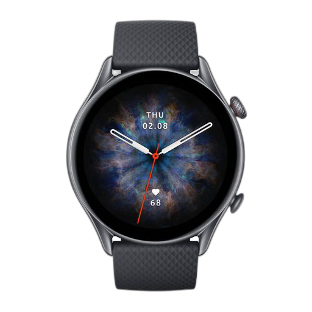

<mat-card class="example-card glass mt-2">
    
    <mat-card-content>
    </mat-card-content>
    <!-- <mat-card-actions>
        <button mat-button>LIKE</button>
        <button mat-button>SHARE</button>
    </mat-card-actions>-->
    <mat-card-header>
        <mat-card-title>Shiba Inu</mat-card-title>
    </mat-card-header>
</mat-card>